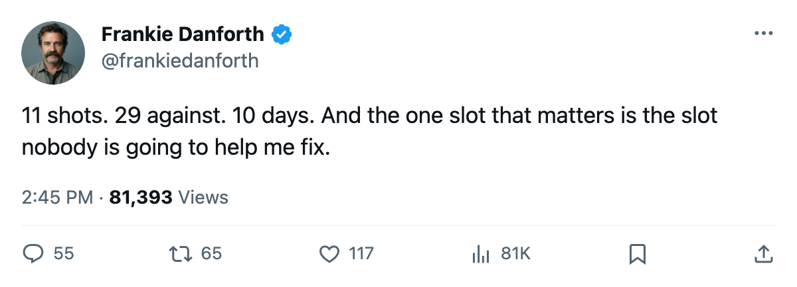
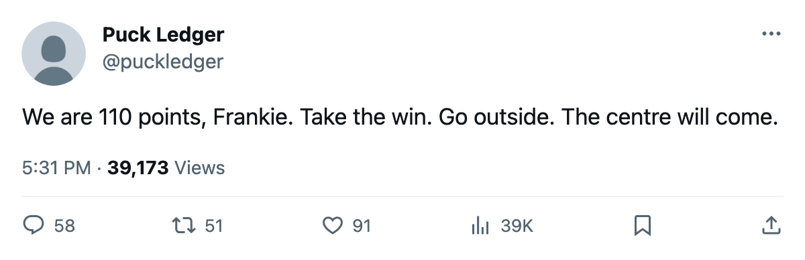

TOR
TORDANFORTH: 11 shots is the number I keep, and 10 days is the clock I hear
The Panic Meter is green because 110 points deserves a green. I am going to be exasperated anyway.
 Frankie DanforthColumnist · Queen City Telegram
Frankie DanforthColumnist · Queen City Telegram
Code Green

Toronto beat Vancouver 3-1 on Monday night. Four straight wins. 110 points. 328 goals for, 166 against. The Panic Meter sits at Code Green because this team is the best in the league and you have no business panicking about a club with 110 points.
I am going to be exasperated anyway.
11 shots. That is how many times Toronto put the puck at the Vancouver net on Monday night. Vancouver had 29. The Canucks are on a 4-game losing streak, missing  Trevor Linden85,
Trevor Linden85,  Petr Cajanek77, and
Petr Cajanek77, and  Bryan Allen77, and they still generated 18 more shots than the Maple Leafs did. You can win a game that way when
Bryan Allen77, and they still generated 18 more shots than the Maple Leafs did. You can win a game that way when  Marian Gaborik96 has 83 points and
Marian Gaborik96 has 83 points and  Ed Belfour92 is in your crease. You cannot win a 7-game series that way.
Ed Belfour92 is in your crease. You cannot win a 7-game series that way.
I have been writing about the same problem since December and I will write about it again: you do not build a championship by outscoring teams. You build it by making the other team unable to control the play, and that requires a centre who can take a draw, win a board battle, and kill a shift when your top line is on the bench for a penalty.  Mats Sundin89 has 77 points and does not need help to score. He needs help to make a playoff series not a coin flip.
Mats Sundin89 has 77 points and does not need help to score. He needs help to make a playoff series not a coin flip.  Brad Richards85 has 61 points and I have no idea what he does on the ice in Game 6.
Brad Richards85 has 61 points and I have no idea what he does on the ice in Game 6.
The clock
The trade deadline arrives in 10 days. Toronto will play 3 road games before it:  Edmonton Oilers Tuesday,
Edmonton Oilers Tuesday,  Calgary Flames Thursday,
Calgary Flames Thursday,  Vancouver Canucks Saturday.
Vancouver Canucks Saturday.
Edmonton is the first problem. The Oilers are 28-20-8, 88 points, and Toronto leads the season series 1-0-0 with one overtime win.  Ales Hemsky71 is out with a neck injury until at least March 13. Paul Farkas told The Tunnel's Marcus Bell he is not dealing Ryan Smyth: "He's 29, he's playing the best hockey of his career, morale is 94, the man loves this town."
Ales Hemsky71 is out with a neck injury until at least March 13. Paul Farkas told The Tunnel's Marcus Bell he is not dealing Ryan Smyth: "He's 29, he's playing the best hockey of his career, morale is 94, the man loves this town."
I believe him. And I believe every GM in this league is saying the same version of that sentence right now, which means the only things moving in the next 10 days are cap casualties, buyouts, and teams that have stopped pretending. Nobody is calling me to tell me they found a centre behind Sundin at practice this morning.
The road
Toronto is 24-9 away from home, the best road record in the Northeast. That number has been there all year and I have not trusted it because I have watched this team in April before. The road games are where the shot number either holds or collapses. On Monday against a team missing 3 of its top players, we shot 11.
If the number is better in the next 3, I will stand down. If it is not, the next time I write this I will be asking the same question, only louder, and the answer will still not be here.
Everything is fine. I just do not want to be calm about 11 shots in front of 69 games worth of evidence that this team does not need to outwork you to beat you. You need to outwork people in June.

